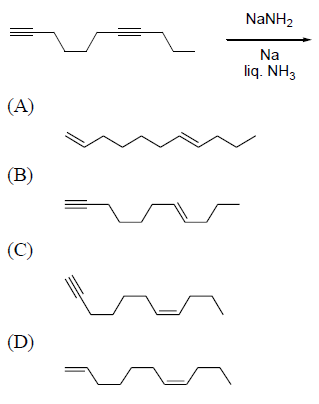
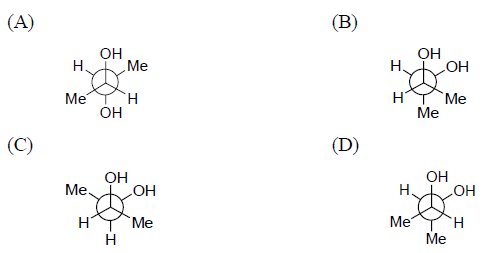
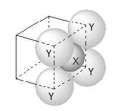

1. The major product formed in the following reaction is
2. Among the following, the conformation that corresponds to the most stable conformation of meso-butane-2,3-diol is
3. For the given close packed structure of a salt made of cation X and anion Y shown below (ions of only one face are shown for clarity), the packing fraction is approximately (packing fraction = packing efficiency ⁄ 100)
(A) 0.74 (B) 0.63
(C) 0.52 (D) 0.48
4. The calculated spin only magnetic moments of [Cr(NH3)6]3+ and [CuF6]3– in BM, respectively, are
(Atomic numbers of Cr and Cu are 24 and 29, respectively)
(A) 3.87 and 2.84 (B) 4.90 and 1.73
(C) 3.87 and 1.73 (D) 4.90 and 2.84